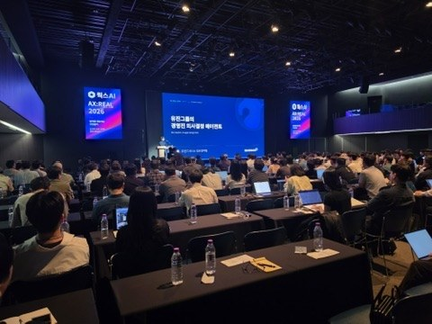

Backend Engineer
Java & Spring 기반의 6년차 서버 백엔드 개발자로 일 1,000건+ 주문 커머스, 4개국 글로벌 결제, 계열사 인사 시스템을 개발·운영하며 핵심 화면 응답 18초 → 1초 이내를 달성했고, 현재는 그룹 가입자 1,130명이 쓰는 AI 서비스의 인증·연동 표준을 설계하고 있습니다.
대규모 트래픽 이커머스에서 트랜잭션과 성능을 다진 뒤 엔터프라이즈 보안·인증 환경을 거치며, 지금은 AI와 사내 시스템을 안전하게 잇는 연동 영역까지 역량을 넓혀 가고 있습니다.
Key Strengths
| 역량 | 근거 |
|---|---|
| 성능 최적화 | 병목을 먼저 특정한 뒤 구조 변경. 응답 18초→1초, 조회 10초→1초 |
| 정합성 설계 | 복합 결제·부분 교환/환불 정산 설계(결제 수단별 환불 금액·잔여 포인트 재계산), 레거시 회원 약 30만 건 이관 |
| 인증·보안 연동 | OAuth 2.0/JWT 전환으로 호출자 사번 자동 주입, AWS Lambda MCP → DMZ 중계 게이트웨이 → e-HR REST API 연동 |
| AI 서비스 개발 | MCP 엔진이 일관성·근거를 통제하고 LLM이 판독·의견을 맡는 투자심의 에이전트(현업 리뷰 6회, 컨퍼런스 발표), 전사 에이전트 16건·도구 10종 |
| 리딩·확산 | PL 2회(스마일게이트샵 개발자 3명, e-HR SSO), 그룹 AI 교육 4회, 멘토링 |
Experience
유진아이티서비스
전환 사유: 단일 서비스 트래픽 중심에서 보안·인증·권한 등 엔터프라이즈 요건을 다루기 위해 이직
2023.06 — 재직 중
2023.06 — 진행 중
e-HR 레거시 현대화와 성능 개선
2018년부터 쌓인 Spring·Oracle 레거시 인사 시스템 단독 운영 · SSO 통합 로그인 PL
Java · Spring · JSP · Oracle · JavaScript · Gradle · Jenkins · JEUS · Git
- 문제 — 핵심 화면 응답이 최대 18초에 달하고, FTP 수동 배포로 운영서버와 저장소가 어긋나 있음
- 빌드·배포 파이프라인 전환 — SVN → GitLab 이관, Gradle 빌드 도입, 운영서버 수정분 900여 건 정합화, Jenkins로 개발서버 자동 배포·운영 WAR 자동 빌드, 설정 누락 시 빌드 실패·운영 WAR 환경 검증·업로드 폴더 제외·JEUS 종료 확인 후 교체 등 배포 사고 방지 장치
- 핵심 화면 응답 18초 → 1초 이내 — DB(동적 SQL 정적화로 하드파싱 제거·인덱스 보완), 서버(SQL 템플릿·마스킹 설정 캐시·접속 로그 비동기), 화면(공통코드 sessionStorage·비동기 AJAX) 3계층 개선
- 운영 OOM 장애 원인 분석·재발 방지 — JVM(힙 1GB) OutOfMemoryError로 503 발생, 장애 직전 호출에서 사번을 이름 LIKE로도 비교해 빈 입력 시 전 사원·전 기간을 메모리에 적재하던 조회를 특정, 사번 일치·월 6자리일 때만 조회하도록 제한(정상 호출 결과 불변)
- 일괄 결재 병렬 처리 — 건별 직렬 처리를 스레드 풀 5개 병렬로 전환(DB 커넥션 풀 고려), 건별 DB 시각 조회 제거
- 개인정보 공통 마스킹 — 공통 인터셉터로 일원화, 메뉴별 마스킹 설정, 해제 로그 저장·조회, 로그인(IP)·메뉴·데이터 조회 로그 개선으로 월별 개인정보처리시스템 접속기록 점검 대응
- SSO 통합 로그인 PL — SSO 인증 연동의 분석·설계·개발·검증 주도
- 입사자 등록 자동화 — 엑셀 업로드·유효성 검증·DB 자동 반영 구조로 전환, 가족·학력 정보까지 확대
- 법정 패치 20회 이상 적용 — 연말정산 등
- 성과 — 핵심 화면 응답 18초 → 1초 이내(실측), 단독 운영
대안 검토 — 응답 지연 해소
| 대안 | 장점 | 한계 | 결론 |
|---|---|---|---|
| 서버 스펙 증설 | 코드 변경 없음 | 병목이 하드파싱·반복 조회라 효과 제한 | 제외 |
| 인덱스 보완만 | 위험 낮음 | 동적 SQL 파싱 비용 잔존 | 1단계 |
| 정적 SQL + 서버 캐시 + 로그 비동기 | 파싱·조회·I/O 동시 제거 | 캐시 무효화 규칙 필요 | 최종 채택 |
2026.04 — 진행 중
투자심의 사전검토 AI 에이전트 설계·구현
경영개선팀 요청 · 2인 팀 엔진 설계·구현 · 현업 리뷰 6회 후 2026.09 오픈
Python · MCP(JSON-RPC) · AWS Lambda · API Gateway · DynamoDB · FastAPI · React
- 문제 — 임원 투자심의를 AI로 대체해 달라는 요청이었으나, LLM에 같은 자료를 주면 총점이 49점과 43점으로 갈려 의사결정에 쓸 수 없음
- 범위 재설정 — "대체"가 아닌 AI 사전 심의 + 경영진 결재 두 단계로 합의, 리포트에 최종 결정 권한 문구 고정
- LLM을 부르지 않는 MCP 엔진 — 서버는 다음 행동 지시문과 최소 검사만 반환하고 판독·조회·의견은 클라이언트 LLM이 수행. 서버 측 LLM 비용 0, 모델 교체 자유
- 근거 원장 — 판독 사실·사용자 답변·외부 증거를 ID 붙은 표 하나로 확정, 다섯 관점(외부투자자·CFO·감사실·사업부 대표·레드팀)은 원장 ID로만 인용, 사람 확인 3단계
- 실측 기반 5세대 재설계 — 첨부 원문 재전송이 청구 입력의 84%임을 확인해 판독·심의 대화 분리로 안건당 비용 62% 절감, 검증 코드가 양식 채우기를 유도(v2 커밋 111건 중 fix 73건)해 걷어내고 코드 6,300 → 1,615줄, 지시문 109,297 → 42,678자
- 검증 — 정답 16항목 가상 안건으로 16/16 확인, 테스트 654건, 배포 없이 전 과정을 돌리는 로컬 실행 환경
- 성과 — 2026.09 경영개선팀 오픈, 8개 섹션 심의 리포트 생성, AX REAL 2026(10/1)에서 설계 발표
대안 검토 — 일관성을 어디서 확보할 것인가
| 대안 | 장점 | 한계 | 결론 |
|---|---|---|---|
| 프롬프트만 사용 | 구현이 가장 단순 | 같은 자료에서 총점 49점과 43점 | 제외 |
| 엔진이 모든 단계를 검증·반려 | 순서 위반·근거 없는 답 차단 | 검증 통과용 양식 채우기 발생, 동시 심의 불가 | 운영 후 철회 |
| 상태 없는 엔진 + 근거 원장 + 최소 검사 | 구조 단순, 동시 심의 가능 | 순서는 강제하지 않고 안내만 | 현재 운영 |
트레이드오프 — 관점이 순서대로 실행되어 한 건에 10~40분이 걸리므로 단계마다 진행 상황을 보여 주고, 같은 오판이 실측에서 두 번 이상 나오면 그 검사 하나만 되살린다
2025.07 — 진행 중
그룹 AI 연동 플랫폼과 도입 확산 (Project Leader)
SaaS 기반 AI 서비스 '웍스AI(유진GPT)' 그룹 도입 · 3인 팀 Project Leader
Python · MCP · OAuth 2.0/JWT · AWS(Lambda·API Gateway·DynamoDB) · Playwright · Git
- 문제 — 도입 석 달째(2025.10) 등록 337명 중 실제 사용자 43명(12.8%), 사내 시스템 데이터에 안전하게 닿는 경로도 없음
- MCP 서버 12개 — Lambda·API Gateway·공용 MCP 처리 코드를 공통 패턴으로 묶어 법무·경영·증권·보안 분야 요청을 전달, 공정거래 준법 에이전트는 요청 메일부터 배포까지 8일, 상태가 필요한 서버는 세션을 DynamoDB에 저장
- 사내 시스템 보안 연동 — AWS Lambda MCP → DMZ 중계 게이트웨이 → e-HR 인사·조직·휴가 REST API, 단일 Bearer 토큰을 OAuth 2.0/JWT로 전환해 호출자 사번 자동 주입
- 지표 정의·월간 보고 — 월 사용자·Light/Heavy User·에이전트 활용 비율 정의, 웍스AI 이용통계 + Playwright 관리자 콘솔 수집을 합친 월간 집계, 8월 활용 비율 48%가 테스트 물량을 포함한 착시임을 먼저 보고하고 31%로 정정
- 사용자 인터뷰·교육 — 10명 인터뷰로 미사용 원인(토큰 한도·안내 메일) 확인, 뉴스레터로 에이전트 16건 소개, 교육 4회(2026.07·10) 직접 강의
- 성과 — 누적 가입자 337 → 1,130명, 월 사용자 43 → 356명(2025.10 → 2026.10), 월 1회 이상 쓰인 에이전트·워크플로우 19 → 91개, 에이전트 활용 비율 8% → 28%
포비즈코리아
입사 동기: 대규모 주문·결제 트래픽을 직접 다루며 트랜잭션·성능 설계 역량을 쌓기 위해 입사
2020.12 — 2023.06
2023.02 — 2023.05
스마일게이트샵 4개국 결제·정책 구조 설계 (개발 PL)
다국가 결제·정책 대응 구조 설계 · 개발자 3명 · 4개월
PHP · CodeIgniter · MySQL · Elasticsearch · JavaScript · Git
- 문제 — 한국 단일 시장용 쇼핑몰을 4개국 동시 서비스로 확장, 국가별 언어·통화·결제·배송 정책을 코드 분기 없이 다뤄야 함
- 복합 결제·부분 환불 정산 — 일반 결제 + 포인트 복합 결제와 부분 교환·환불 정산 설계·구현, 결제 수단별 환불 금액 정합성·잔여 금액·포인트 재계산 담당
- 설정 기반 다국가 구조 — 국가·언어·통화·결제수단을 데이터로 분리해 국가 추가를 코드 수정 없이 처리, 국내/해외 결제(이니시스/엑심베이) 연동
- 국가별 검색 — 국가별 Elasticsearch 인덱스 분리로 현지 언어 검색
- EMS·임직원 인증·이지웰 복지포인트·SNS 로그인 5종 연동, 장바구니 배송 국가 선택·교환/반품/환불 클레임 개발, 개발자 3명 일정·업무 배분 관리
- 성과 — 4개월 만에 4개국·5개 언어 동시 출시, 국가를 설정으로 늘리는 구조 확보
2020.12 — 2023.03
ELAND FOLDER MALL 구축·운영
하루 평균 1,000건 이상 주문 커머스 · 개발자 3명 · 집계·커뮤니티·검색 담당
PHP · CodeIgniter · MySQL · Elasticsearch · Jenkins · Linux
- 문제 — Best 상품을 요청마다 실시간 집계해 데이터가 쌓일수록 느려져 조회 10초 (EXPLAIN: 풀 스캔·임시 테이블, 인덱스 누락)
- Best 상품 조회 10초 → 1초 이내 — 배치 사전 집계 + 별도 테이블로 읽기·집계 경로 분리, 누락 인덱스 보강
- Elasticsearch 검색 — 상품 검색·최근 본 상품 기록 개발, 관리자 검색 고도화
- 커뮤니티·프로모션 — FolderingChannel 팔로우·UGC 신고/차단·후기·평점·게시판 단독 개발, 초성퀴즈·TimeSale·래플 이벤트 메인 담당
- 외부 연동·운영 — 본인인증·회원정보·후기종합·평점통계 외부 연동, Cron 운영 배치, Jenkins 자동·수동 배포
- 성과 — Best 상품 조회 10초 → 1초 이내, 사용자 요청을 집계 부하에서 분리
2021.01 — 2023.01
그 외 커머스 구축·운영
- 푸드케어 CLE (2022.07~2023.02) — 레거시 회원 약 30만 건 이관, 요일·식단·월령별 일정 배송(일자 × 상품 × 고객) 개발, Elasticsearch 연동
- HL SCIENCE MALL (2021.03~2021.12) — 신규 구축에서 장바구니·주문·결제·관리자 커머스 코어 단독 구현, 네이버페이 주문형 API 연동, 관리자 검색 고도화, 월 약 2,000건 주문
- 위기브 고향사랑기부제 (2022.10~2023.01) — 지자체별 마이크로사이트(URL·세션 기반 분기)와 입점·답례품 등록 제휴 관리 메인 구현, UGC 신고·차단, 4개월 일정 오픈
Education
2025.03 — 2026.08
국민대학교 소프트웨어융합대학원
석사 · 인공지능전공 · 졸업 · 학점 4.19 / 4.5
2021.03 — 2023.08
한국방송통신대학교
학사 · 컴퓨터과학과(3학년 편입) · 졸업 · 학점 3.1 / 4.5
2017.03 — 2021.02
여주대학교
전문학사 · 컴퓨터정보과 · 졸업 · 학점 4.35 / 4.5
2020.09 — 2020.11
SoftSquared 10기 Server Session
서버 개발 교육 과정 수료
Certifications
2026.09
정보처리기사
한국산업인력공단
Skills
주력 실무 3년+ · 운영·장애 대응 경험 활용 프로젝트 경험
Backend
Database
Infra · DevOps
AI · ML
Tools · Collab
Activities
2026.10
AX REAL 2026 웍스AI 컨퍼런스 발표 — "MCP를 오케스트레이터로 활용한 투자심의 에이전트"
유진그룹 AX 여정(유진GPT 도입~그룹 확산)과 투자심의 워크플로우 엔진 사례 발표 · 에이전트 활용 비율 8%→48%, MCP 엔진/LLM 역할 분리, HITL·근거 반려 설계 공유 · 발표자 · 청중 약 300명 · 실제 시연 영상 포함


2025
그룹 전사 AI 활용 교육 · 팀장급 도입 효과 발표
주요 계열사 대상 오프라인 활용 가이드 5회, 그룹사 팀장급 대상 발표 1회 (약 30명)
2026
기업 데이터 접근성 향상을 위한 자기교정 Text-to-SQL 프레임워크
한국IT서비스학회 학술대회 게재 · 제1저자 · 기여: 자기교정 루프 설계·실험, 쿼리 정확도 baseline 대비 향상 검증
2026.06 — 2026.08
AI CHAMPION 대회 100팀 선발 진출
카카오톡 대화를 AI 웹툰으로 자동 변환하는 서비스 ‘톡툰’ · 백엔드 · AI 파이프라인 설계 및 구현 담당 · 100팀 선발 통과, 다음 선발 단계에서 2026.08 종료
2021.01 — 2021.05
SoftSquared Server Session 멘토
1:1 서버 개발 멘토링